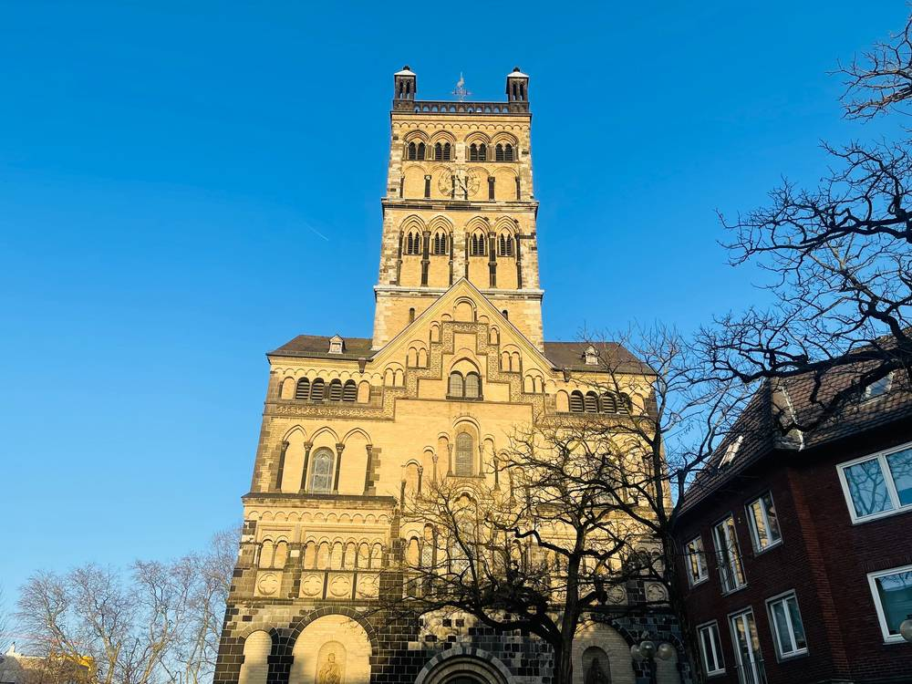
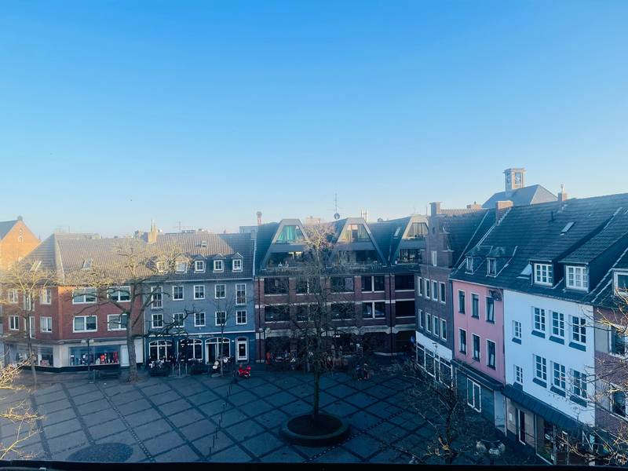
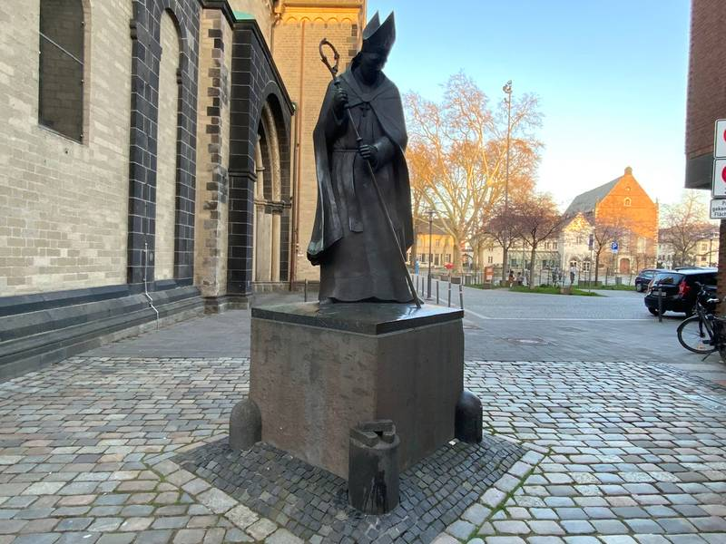
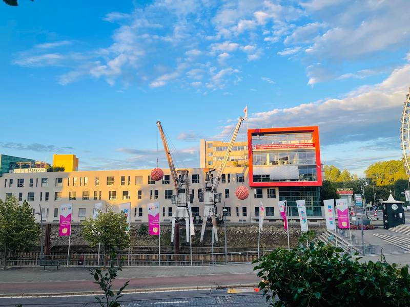
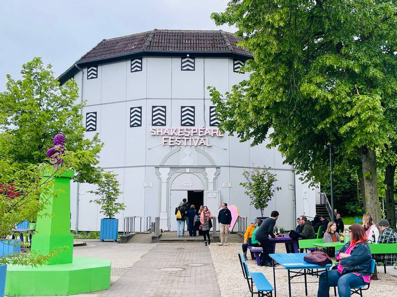
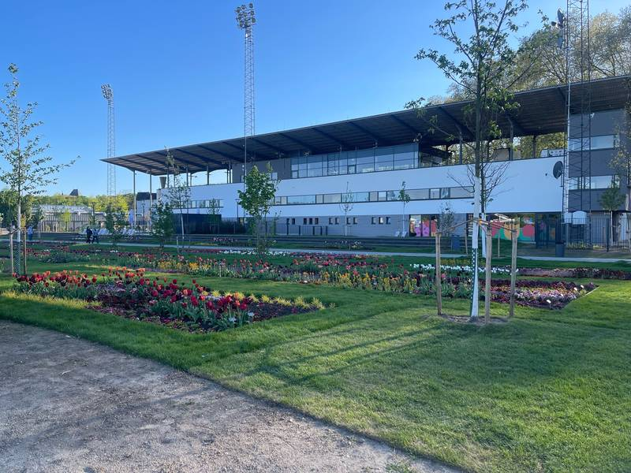

Touren außerhalb von Düsseldorf
Neuss – Römerstadt am Rhein
Über 2.000 Jahre Geschichte – nur eine Straßenbahnfahrt von Düsseldorf entfernt.


Neuss gehört zu den ältesten Städten Deutschlands – und das spürt man auf Schritt und Tritt. Wir zeigen Ihnen, wo die Römer ihr Lager aufschlugen, wie die Stadt einem mächtigen Herzog die Stirn bot und warum der Rhein sie reich gemacht hat.
Das erwartet Sie
- Marktplatz und Quirinus-Münster: Vom lebendigen Marktplatz geht es zum Wahrzeichen der Stadt – dem mächtigen Münster des heiligen Quirinus.
- Kardinal Frings: Wer war der Neusser Kardinal – und warum wird er in seiner Heimatstadt bis heute verehrt?
- RomaNEum und die Römer: Hier beginnt die Geschichte von Neuss – als römisches Lager Novaesium.
- Das älteste Haus der Stadt: ein Blick weit zurück in die Neusser Baugeschichte.
- Karl der Kühne: Fast ein Jahr lang belagerte der Herzog von Burgund 1474/75 die Stadt – und Neuss hielt stand.
- Der Rhein im Mittelalter: Wie der Fluss Handel, Reichtum und das Gesicht der Stadt prägte – bis hin zum heutigen Hafen.
Eindrücke aus Neuss






Gut zu wissen
- Unterwegs sind Stationen mit Verkostung möglich.
- Gut kombinierbar: Start in Düsseldorf, dann mit der Straßenbahn nach Neuss.
- Die Dauer passen wir gerne Ihren Wünschen an.
- Nach Absprache führen wir Sie auch über das Gelände der Landesgartenschau 2026 – einst Galopprennbahn, heute ein neuer Bürgerpark.
Neuss hat noch mehr zu bieten: Im Sommer lockt das Shakespeare-Festival im Globe-Theater, einem Nachbau der berühmten Londoner Bühne.
Weitere Führungen in Neuss
- Hafen-Tour: vom Handelsplatz der Römer bis zum modernen Hafenbecken.
- Nachtwächter-Führung: Neuss bei Laternenschein – auf Anfrage.
Interesse an dieser Tour?
Stellen Sie unverbindlich Ihre Anfrage für „Neuss“.